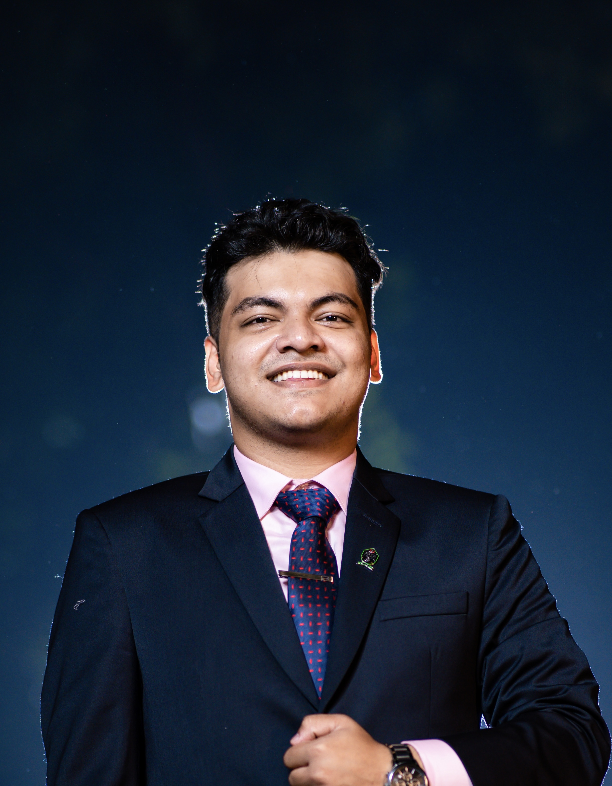

I am from Dhaka, Bangladesh. I graduated with my bachelor's in CS from IUT, Bangladesh with honors. I went on to earn my Master's in Computer Science from George Mason University with a 3.97 GPA. Currently, I am pursuing my PhD at Virginia Tech's Institute for Advanced Computing under the supervision of Dr. Sanmay Das.
I primarily work in AI and Machine Learning. Currently, my research focuses on using multi-agent systems for scarce resource allocation with a focus on fairness (particularly ensuring social justice) and efficiency. In the past, I have worked on using LLMs for sarcasm detection and sentiment analysis from social media.